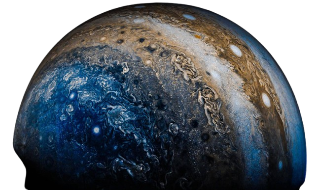

DISCOVER JUPITER
Step into the world of the giant planet.
Explore its storms, rings, moons and the mysteries hidden inside.
Step into the world of the giant planet.
Explore its storms, rings, moons and the mysteries hidden inside.

A comprehensive guide to the largest planet in our solar system. Jupiter is a world of extremes - from
its massive size to its violent storms, this gas giant continues to fascinate scientists and space
enthusiasts alike.Jupiter is the largest planet in our solar system, a giant world of swirling clouds and storms. It has a mass more than twice that of all the other planets combined.
Jupiter is so massive that it could swallow more than 1,300 Earths. Its equator is about 11 times wider than Earth's.
Jupiter contains more than twice the mass of all other planets combined. If you weigh 100 pounds on Earth, you would weigh 253 pounds on Jupiter.
Jupiter's atmosphere is a chaotic laboratory of extreme weather, with powerful storms, lightning, and auroras. The planet has no solid surface beneath its thick atmosphere.
The Great Red Spot is a gigantic storm that has been raging for centuries. It's large enough to swallow Earth whole and rotates counterclockwise.
Jupiter radiates more energy than it receives from the Sun. The internal heat is generated by gravitational compression of the planet.
Jupiter doesn't have a solid surface to stand on. Deep below the clouds, hydrogen gas transforms into liquid and then metallic hydrogen under extreme pressure.
Jupiter rotates faster than any other planet in the solar system. A day on Jupiter lasts less than 10 hours, causing the planet to bulge at its equator.
Jupiter has the most moons in our solar system. The four largest (Galilean moons) were discovered by Galileo in 1610 and are fascinating worlds themselves.
Multiple spacecraft have visited Jupiter, providing invaluable data about this giant planet. The Juno mission is currently orbiting Jupiter, studying its composition and magnetic field.